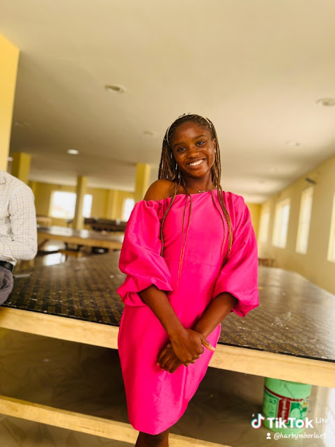

WELCOME TO MY PORTFOLIO
Hello, I'm Sinmisola Ajayi!
Computer Science Student | Aspiring Frontend Developer
I am a curious and creative individual with a passion for learning, exploring ideas and discovering new possibilities. I enjoy working quietly behind the scenes, observing, experimenting and developing my skills at my own pace. I am particularly interested in frontend development and UI/UX design, where I can combine creativity with technology to build meaningful digital experiences. I love working hands-on, bringing ideas to life and taking on projects that challenge me to think differently. I consider myself dedicated and hardworking, with a strong belief in continuous learning, personal growth and putting genuine effort into everything I do.
Explore My JourneyGET TO KNOW ME
Explore My Portfolio
Take a closer look at my work, academic journey and interests.
My Projects
A collection of creative and practical projects that reflect my learning, ideas and growing skills in technology.
View Projects →Academic Planner
A space where I organise academic activities, manage tasks and keep track of my learning goals.
Open Planner →Contact Me
Interested in connecting, sharing ideas or discussing opportunities? I'd be happy to hear from you.
Get in Touch →BEYOND THE CLASSROOM
What Drives My Curiosity
Some of the areas that inspire me to keep learning and creating.
01. Technology
Exploring how technology works and how it can solve everyday problems.
02. Creative Design
Enjoying visual creativity, thoughtful layouts and attractive digital experiences.
03. Continuous Learning
Discovering new skills, experimenting with ideas and improving through practice.
04. Hands-on Projects
Turning ideas into practical work and learning through real experiences.
Behind the Code: How I Built My Portfolio
Take a look behind the scenes at the code and development process behind my academic portfolio.